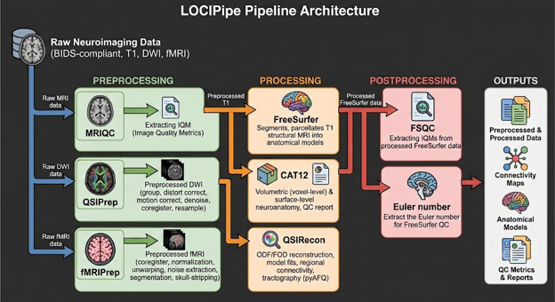

About the ENIGMA Consortium
The ENIGMA Consortium is an international effort by leaders worldwide. The Consortium brings together researchers in imaging genomics, neurology and psychiatry, to understand brain structure and function, based on MRI, DTI, fMRI, genetic data and many patient populations.
ENIGMA-Epilepsy Mission
As the ENIGMA Epilepsy Working Group, we are dedicated to improving our understanding of in vivo neuroanatomical disruptions in people with epilepsy compared to healthy individuals in the general population. The consortium's co-chairs include Professor Sisodiya (UCL, UK), and Professor Carrie McDonald (UCSD, USA).
Consortium activities
Here are some typical activities underway by the consortium:
- Data submission: MRI data and demographic/clinical covariates are submitted to central processing (UCSD) for data processing, analysis and harmonization.
- Secondary Proposals: Project leads submit a written project proposal and work with UCSD central processing (for collated derived MRI metrics and covariate data) and co-authors (for study design and manuscript content) to execute analysis and develop a manuscript of results.
- Weekly meeting: Co-chairs (UCSD, UCL) hold a weekly meeting tracking projects and project management. Sites provide guest presentations as required.
- Quarterly meeting: Teleconference with all ENIGMA-Epilepsy members providing news and status updates on secondary proposals, conference presentations and manuscript progress.
- Conference meetings: We try to gather for a social meeting at popular conferences such as Organization for Human Brain Mapping (OHBM), American Epilepsy Society (AES) etc.
- Mail list: We have a mail list for sending out communications to the consortium, mainly invites to the quarterly meetings. If you would like to join the mail list email sehatton@health.ucsd.edu.
Research Areas

| Title | Lead | Published | Link |
|---|---|---|---|
| Structural brain abnormalities in the common epilepsies assessed in a worldwide ENIGMA study | Whelan CD | 1-Feb-18 | 10.1093/brain/awx341 |
| The ENIGMA-Epilepsy working group: Mapping disease from large data sets. | Sisodiya SM | 29-May-20 | 10.1002/hbm.25037 |
| White matter abnormalities across different epilepsy syndromes in adults: an ENIGMA-Epilepsy study | Hatton SN | 1-Aug-20 | 10.1093/brain/awaa200 |
| Network-based atrophy modeling in the common epilepsies: A worldwide ENIGMA study | Larivière S | 18-Nov-20 | 10.1126/sciadv.abc6457 |
| Artificial intelligence for classification of temporal lobe epilepsy with ROI-level MRI data: A worldwide ENIGMA-Epilepsy study | Gleichgerrcht E | 24-Jul-21 | 10.1016/j.nicl.2021.102765 |
| A systems-level analysis highlights microglial activation as a modifying factor in common epilepsies | Altmann A | 22-Feb-26 | 10.1111/nan.12758 |
| Topographic divergence of atypical cortical asymmetry and atrophy patterns in temporal lobe epilepsy | Park BY | 24-May-22 | 10.1093/brain/awab417 |
| Structural network alterations in focal and generalized epilepsy assessed in a worldwide ENIGMA study follow axes of epilepsy risk gene expression. | Larivière S | 27-Jul-22 | 10.1038/s41467-022-31730-5 |
| Event-based modeling in temporal lobe epilepsy demonstrates progressive atrophy from cross-sectional data | Lopez SM | 22-Aug-26 | 10.1111/epi.17316 |
| Patterns of subregional cerebellar atrophy across epilepsy syndromes: An ENIGMA-Epilepsy study | Kerestes R | 24-Apr-26 | 10.1111/epi.17881 |
| A Worldwide ENIGMA Study on Epilepsy-Related Gray and White Matter Compromise Across the Adult Lifespan | Chen J | 23-Sep-25 | 10.1212/WNL.0000000000213688 |
| Associations between epilepsy-related polygenic risk and brain morphology in childhood | Ngo A | 7-Feb-26 | 10.1093/brain/awaf259 |
| Abnormal functional connectivity patterns in temporal lobe epilepsy-An international ENIGMA-epilepsy study | Ives-Deliperi V | 25-Mar-26 | 10.1002/epi4.70209 |
Sites
We collaborate with a wide range of world leading research groups and clinical centers around the world. All these sites have shared MRI data and demographic/clinical covariates with the consortium. Sites of note:
- UCSD: ENIGMA-Epilepsy Central processing. Co-chair Carrie McDonald. Project CSoordinator Sean Hatton.
- UCL: Co-chair: Sanjay Sisodiya.
- USC: ENIGMA Central: Paul M. Thompson
| Site Code | Site Alias | Full name | Country | Leads |
|---|---|---|---|---|
| 1 | NIH, Bethesda, MD (US) | National Institute of Health | USA | Leigh Sepeta; Sara Inati |
| 2 | UniMoRe (IT) | Universita' di Modena e Reggio Emilia | Italy | Stefano Meletti; Anna Vaudano |
| 3 | UDA (IT) | Universita' D'Annunzio | Italy | Stefano Sensi |
| 4 | Rush, Chicago, IL (US) | Rush University Medical Center | USA | Travis Stoub |
| 5 | UniCa (IT) | Universita ' di Cagliari | Italy | Luca Saba |
| 6 | USZ, Zurich (CH) | University Hospital Zurich | Switzerland | Marian Galovic |
| 7 | UNICAMP, Campinas (BR) | Universidade Estadual de Campinas | Brazil | Fernando Cendes |
| 8 | GWU, Washington, DC (USA) | George Washington University | USA | Taha Gholipour |
| 9 | UCT, Cape Town (SA) | University of Cape Town | South Africa | Victoria Ives-Deliperi |
| 10 | CN, Nanjing | University of Nanjing | China | Zhiqiang Zhang |
| 11 | UCSD, La Jolla, CA (US) | University of California San Diego | USA | Carrie McDonald/Erik Kaestner |
| 12 | ULB (Bruxelles, BE) | Université Libre de Bruxelles | Belgium | Chantal Depondt |
| 13 | EPICZ (IT) | University of Catanzaro | Italy | Antonio Gambardella |
| 14 | FSM, IRCCS (IT) | Fondazione IRCCS Stella Maris | Italy | Emanuele Bartolini |
| 15 | Göttingen (DE) | University of Göttingen | Germany | Niels Focke |
| 16 | UKBonn, Bonn (DE) | University Hospital Bonn | Germany | Theodor Rueber |
| 17 | MNI, Montreal, QC (CA) | Montreal Neurological Institute, McGill University | Canada | Boris Bernhardt |
| 18 | NYU, New York, NY (US) | New York University | USA | Orrin Devinsky/Heath Pardoe |
| 19 | IGG (IT) | University of Genova | Italy | Pasquale Stariano |
| 20 | UNAM, Mexico City (MX) | Universidad Nacional Autónoma de México | Mexico | Luis Concha |
| 21 | UCLA, Los Angeles, CA (US) | University of California Los Angeles | USA | Richard Staba |
| 22 | UPenn, Philadelphia, PA (US) | University of Pennsylvania | USA | Kathryn A. Davis |
| 23 | MUSC, Columbia, SC (US) | Medical University of South Carolina | USA | Ezequiel Gleichgerrcht |
| 24 | LNF IRCCS (IT) | IRCCS Medea - La Nostra Famiglia di Conegliano | Italy | Paolo Bonanni |
| 25 | Emory, Atlanta, GA (US) | Emory University | USA | Ezequiel Gleichgerrcht/Leo Bonilha |
| 26 | Meyer Clinic, Florence (IT) | Meyer Clinic Florence | Italy | Renzo Guerrini |
| 27 | Tübingen (DE) | University of Tübingen | Germany | Pascal Martin |
| 28 | UCL (Univ College London), London (UK) | University College London | UK | Sanjay Sisodiya/Patrick B Moloney; John Duncan |
| 29 | Monash at Alfred Institute, Melbourne (AU) | Alfred Institute at Monash University | Australia | Terence J. O’Brien |
| 30 | UniMe, Messina (IT) @ Palermo | University of Messina | Italy | Angelo Labate |
| 31 | UCSF, San Francisco, CA (US) | University of California San Francisco | USA | Jon Kleen |
| 32 | Frankfurt, Frankfurt (DE) | Frankfurt University | Germany | Johann Philipp |
| 33 | UWO, London, Ontario (CA) | University of Western Ontario | Canada | Giovanni Pellegrino |
| 34 | UCalgary, Calgary, Alberta (CA) | University of Calgary | Canada | Paolo Federico |
| 35 | TLVMC, Tel Aviv (IL) | Tel Aviv Medical Center | Israel | Firas Fahoum |
| 36 | Mass General Brigham (MGB) | Mass General Brigham | USA | John Rolston |
| 37 | Henry Ford, Detroit, MI (US) | Henry Ford Health System | USA | Hamid Soltanian-Zadeh |
| 38 | CHUV, Lausanne (CH) | Lausanne University Hospital | Switzerland | Carolina Ciumas |
| 39 | QU | Queens University | Canada | Gavin Winston |
| NA | USC, Los Angles (USA) | University of Southern California | USA | Paul M. Thompson |
Secondary Proposals
Secondary Proposals are where sites can propose and conduct analysis of the ENIGMA-Epilepsy data. The secondary proposals process is:
- An investigator submits a Secondary Proposal (available from sehatton@health.ucsd.edu) detailing the outline of the proposed study.
- The Secondary Proposal may be presented to the consortium during the quarterly teleconference. The proposal is circulated to the consortium members for review.
- An electronic form is circulated to the consortium requesting participation in site data sharing (i.e. authorizing site data inclusion in the specific proposal) and contributing to study design and manuscript development.
- After the data cutoff, MRI derivatives, demographic and clinical data is collated at the central processing site (UCSD) and sent to the Secondary Proposal lead for analysis.
- When results are ready, the Secondary Proposal is typically presented to the consortium at the quarterly teleconference for discussion.
- Manuscript undergoes internal review with participating consortium members that signed up to the Secondary Proposal.
- Central processing (UCSD, USC) helps submit the manuscript for external review (e.g. help with large author blocks, affiliations etc.).
- Publication or resubmission.
Systems Overview
MRI Processing Pipeline Architecture
The ENIGMA-Epilepsy team have developed a Python-based orchestration framework for neuroimaging data analysis, LOCIPipe. The pipeline features BIDS-compliable, containerized pipelines for extracting the following data (Figure 1):
Preprocessing:
- MRIQC: Extracting IQM from raw MRI data. https://mriqc.readthedocs.io/
- QSIPrep: Automatically generated DWI preprocessing pipelines that will group, distortion correct, motion correct, denoise, coregister and resample scans. https://qsiprep.readthedocs.io/
- fMRIPrep: A functional MRI (fMRI) data preprocessing pipeline that performs basic processing steps (coregistration, normalization, unwarping, noise component extraction, segmentation, skull-stripping, etc.). https://fmriprep.org/
Processing:
- FreeSurfer: Segments and parcellates T1-weighted structural MRIs into anatomical models of the human brain. https://surfer.nmr.mgh.harvard.edu/
- CAT12: Automated pipeline that extracts both volumetric (voxel-level) and surface-level neuroanatomy directly from a T1-weighted MRI. This pipeline also includes a QC report. https://neuro-jena.github.io/cat/
- QSIRecon: Takes the QSIPrep DWI preprocessing and produces outputs such as ODF/FOD reconstruction, model fits and parameter estimation, regional connectivity, and tractography (i.e. pyAFQ tractography). https://qsirecon.readthedocs.io/
Postprocessing:
- FSQC: FreeSurfer QC pipeline extracts IQMs from processed FreeSurfer data. https://github.com/Deep-MI/fsqc
- Euler number: Extract the Euler number from processed FreeSurfer data, used from FreeSurfer QC. https://surfer.nmr.mgh.harvard.edu/fswiki/mris_euler_number

Figure 1. ENIGMA-Epilepsy LOCIPipeline Architecture
Demographic and clinical covariate management
Site-level demographic and clinical covariate are centrally managed using REDCap (Research Electronic Data Capture), a secure, web-based software platform designed to build and manage online databases and surveys.
Submitting Data to the ENIGMA-Epilepsy Consortium
Data Use Agreement and Memorandum of Understanding
Prior to the transfer of data, the site is required to complete a Data Use Agreement (DUA). Each person that will be handling ENIGMA-Epilepsy Consortium data needs to complete a Memorandum of Understanding (MOU). Forms are available from sehatton@health.ucsd.edu.
Preparing MRI data
MRI data is to be provided as DICOMs (e.g. one subject/session per folder) or NIFTI with JSON sidecar. If you are converting from DICOMs to NIFTI/JSONs we recommend using either dcm2bids or BIDScoin. We are HIPAA, GDPR, and GCP compliant: please anonymize to remove identifying header information (dates, names, addresses etc.). MRI data does not need to be defaced as we are not publicly sharing raw MRI data.
If you have field maps, during the anonymization process please ensure these header fields are recorded in the JSON:
- IntendedFor: E.g. "IntendedFor": ["bids::sub-01/ses-01/dwi/sub-01_ses-01_dir-AP_dwi.nii.gz"]
- B0FieldIdentifier & B0FieldSource: E.g. "B0FieldIdentifier": "fmap_run01", "B0FieldSource": "fmap_run01"
- TotalReadoutTime: If using EPI files for fieldmap correction, ensure they have "TotalReadoutTime", e.g.: "TotalReadoutTime": 0.00475.
- PhaseEncodingDirection: For EPI, ASL, fMRI-BOLD, and DWI images, ensure they have the "PhaseEncodingDirection" field, e.g.: "PhaseEncodingDirection": "j-"
Preparing demographic and clinical covariates
The full data dictionary of demographic and clinical covariates is available as a PDF for reference. A shortened Word document version is also available which lists the core covariates that must be included for participation in secondary projects. The covariate file can be submitted as a CSV or Excel file.
Data transfer method
Data (MRI and demographic/clinical covariate information) are transferred via box.com. When you are ready, send an email to sehatton@health.ucsd.edu and you will be provided with a link to drag-and-drop the data in.
Contact
- For day-to-day help contact the Project Coordinator Dr. Sean Hatton (sehatton@health.ucsd.edu)
- For questions about the consortium and new secondary proposals please contact the Consortium Co-chairs Prof. Carrie McDonald (camcdonald@ucsd.edu) and Prof. Sanjay Sisodiya (s.sisodiya@ucl.ac.uk).